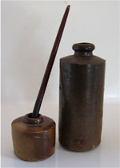

Le
pergamene magiche sono un particolare tipo di oggetti magici la cui
caratteristica consiste nel conservare il potere magico all'interno di uno
scritto posizionato su una pergamena. Esistono
tre diverse tipologie
di pergamene magiche, ognuna delle quali possiede determinate caratteristiche.
Le Pergamene dei Maghi,
le Pergamene Clericali
e le Pergamene di
Protezione. Il metodo di
scrittura di ognuna di queste tipologie di pergamene, quindi, differisce
notevolmente e sarà specificato separatamente.
Occorre notare, infine, che esistono alcuni
oggetti magici in senso stretto
che hanno la forma di una pergamena
ma che non rientrando in
alcuna delle suddette tipologie non possono considerarsi in senso tecnico
pergamene magiche. Si
tratta, infatti, di oggetti magici veri e propri il cui potere è insito nella
carta di pergamena con la quale l'oggetto è costruito e non custodito nella
scrittura sulla stessa apposta (si pensi che in alcuni casi su tali oggetti non
vi è scritto nulla). Il metodo per la creazione di tali oggetti, dunque, sarà lo
stesso utilizzato per la creazione dei comuni oggetti magici.
Scrivere una Pergamena dei Maghi
Qualsiasi mago, a partire dal primo livello di esperienza, può provare a scrivere una magia che conosce ed ha regolarmente ripassato su una pergamena magica. Una volta che un mago inizia a scrivere una pergamena costui dovrà terminare la stessa non potendo essere una pergamena scritta da diversi utenti di magia. Un mago può normalmente scrivere un incantesimo su una pergamena ad un qualsiasi livello di lancio pari od inferiore al suo livello di esperienza. Solo gli arcanologi e i maghi che posseggono la competenza scribe possono riuscire a scrivere un incantesimo su una pergamena ad un livello di lancio superiore rispetto al loro livello di esperienza.
Strumenti di Lavoro - Per
poter operare il mago necessita di alcuni strumenti basilari:
a) La Pergamena Magica
Vuota.
La pergamena magica vuota è un
Least Minor Enchantment
da
75
punti esperienza
e
150 monete d'oro di valore
(vedi).
Si tratta del supporto basilare per poter scrivere qualsiasi incantesimo dei
maghi. Ogni pergamena magica vuota può contenere
fino a 12 punti incantesimi.
Ogni incantesimo occupa
[0,5 + (0,5 punti * livello di potere)]
per cui lo spazio occupato da ogni incantesimo può essere calcolato in base al
suo livello di potere come riportato nella seguente tabella:
| I Livello | II Livello | III Livello | IV Livello | V Livello | VI Livello | VII Livello | VIII Livello | IX Livello |
| 1 punto | 1,5 punti | 2 punti | 2,5 punti | 3 punti | 3,5 punti | 4 punti | 4,5 punti | 5 punti |
Per fare
alcuni esempi, quindi, in una pergamena vuota possono entrarci fino a 12
incantesimi di primo livello di potere; oppure fino a 8 incantesimi di secondo
livello di potere; oppure 3 incantesimi di quinto livello di potere + 1
incantesimo di terzo livello + 1 incantesimo di primo livello di potere; e così
via.
b) La Penna Magica.
| OGGETTO | Penne Magiche | ||||||||||||||||||||||
| ORIGINE | MAGICA | ||||||||||||||||||||||
| POTENZA | VARIABILE | ||||||||||||||||||||||
| SCUOLA DI MAGIA | ENCHANTMENT | ||||||||||||||||||||||
|
DESCRIZIONE
|
La penna per scrivere le pergamene magiche degli utenti di magia è un oggetto magico minore. La penna può essere usata un numero illimitato di volte non consumandosi con l'uso. Esistono vari tipi di penne per pergamene magiche i cui materiali e qualità di fattura differiscono notevolmente. Solo con le penne migliori possono essere scritti incantesimi di alto livello di potere. Indipendentemente dal valore dell'incantamento ogni penna ha un costo base pari a 10 g.p. ed un peso pari a 0,2 libbre. Esistono anche penne magiche potenziate che sono dotate di maggiore potere magico e conferiscono un bonus alla scrittura degli incantesimi pari al +5% nonostante possano scrivere magie dello stesso livello di potere delle penne magiche comuni. Il costo delle penne ed il massimo livello di potere degli incantesimi che possono essere scritti con le stesse è specificato nella seguente tabella:
|
c) Gli Inchiostri Magici.
| OGGETTO | Inchiostri Magici | ||||||||
| ORIGINE | MAGICA | ||||||||
| POTENZA | VARIABILE | ||||||||
| SCUOLA DI MAGIA | ENCHANTMENT | ||||||||
|
DESCRIZIONE  |
Gli inchiostri magici sono un componente necessario per scrivere gli incantesimi sulle pergamene magiche dei maghi. Questi inchiostri sono resi magici con un incantamento minore. Il quantitativo di inchiostro magico assorbito dalla pergamena alla scrittura di un incantesimo varia a seconda del livello di potere della magia che si vuole scrivere su una pergamena e del livello di lancio relativo. Esistono tre tipi di inchiostro magico dalla potenza crescente che devono essere utilizzati rispettivamente per scrivere magie di determinati livelli di potere. Indipendentemente dalla potenza ogni fiasca di inchiostro magico ha un peso pari ad 1 libbra ed il valore indicato nella seguente tabella:
|
La scrittura di ogni singolo incantesimo
necessita di un ammontare di inchiostro abbastanza potente per scrivere magie
del livello indicato
il cui valore cambia a seconda del livello di potere dello stesso come indicato
nella seguente tabella:
| I Livello | II Livello | III Livello | IV Livello | V Livello | VI Livello | VII Livello | VIII Livello | IX Livello |
| 3 g.p. | 7 g.p. | 20 g.p. | 50 g.p. | 115 g.p. | 250 g.p. | 650 g.p. | 1000 g.p. | 1500 g.p. |
Oltre a tale inchiostro base, il mago necessita di un ammontare di inchiostro supplementare nei casi in cui l'incantesimo risulti scritto ad un livello di lancio superiore rispetto al livello minimo di lancio. Per ogni livello di lancio superiore al minimo, infatti, il mago dovrà utilizzare un ammontare di inchiostro magico supplementare pari ad 4 corone * livello di potere della magia.
| +1 Livello | +2 Livelli | +3 Livelli | +4 Livelli | +5 Livelli | +6 Livelli | +7 Livelli | +8 Livelli | +9 Livelli |
| 4 g.p. | 8 g.p. | 12 g.p. | 16 g.p. | 20 g.p. | 24 g.p. | 28 g.p. | 32 g.p. | 36 g.p. |
Per fare un esempio, quindi, per scrivere su una pergamena vuota 3 incantesimi di quinto livello di potere + 1 incantesimo di terzo livello + 1 incantesimo di primo livello di potere, tutti al 9° livello di lancio, un mago dovrà utilizzare inchiostri base per 368 monete d'oro (3 * 115 g.p. + 20 g.p. + 3 g.p.) + inchiostri supplementari per 80 monete d'oro (0 per le magie di 5° + 48 g.p. per la magia di 3° + 32 g.p. per la magia di 1°) .
Tempo di Lavoro - Per poter scrivere ogni singolo incantesimo sulla pergamena il mago dovrà impiegare un tempo base calcolato in giorni di lavoro che varia a seconda del livello di potere dell'incantesimo e che è possibile calcolare con la seguente formula 2,5*[1+(0,5*(Livello di potere - 1))] per cui il tempo base richiesto per scrivere ogni incantesimo può essere riportato nella seguente tabella:
| I Livello | II Livello | III Livello | IV Livello | V Livello | VI Livello | VII Livello | VIII Livello | IX Livello |
| 2,5 giorni | 3,75 giorni | 5 giorni | 6,25 giorni | 7,5 giorni | 8,75 giorni | 10 giorni | 11,25 giorni | 12,5 giorni |
Al tempo
base necessario per scrivere ogni singolo incantesimo
il mago deve sottrarre 0.5 giorni
per ogni livello di potere
a cui ha accesso che è superiore
rispetto al livello di potere della magia fino a giungere ad un tempo
minimo di 1 giorno ad
incantesimo.
Il mago, inoltre, può decidere di impiegare il
33% dei giorni in più
(calcolato per eccesso alla
giornata di lavoro piena) a scrivere un determinato incantesimo al fine di
ottenere un bonus di +5%
alla percentuale di
successo di scrittura.
Si noti, infine, che tutti gli incantesimi sulla pergamena
devono essere scritti
consecutivamente e senza interruzioni
e che una volta sommati i giorni totali di lavoro di tutti gli incantesimi si
arrotonderà per eccesso il numero complessivo dei giorni necessari a scrivere
l'intera pergamena. Se, infatti, per qualsiasi motivo il mago deve interrompere
i lavori la pergamena non potrà essere più terminata e sulla stessa risulteranno
presenti solo gli incantesimi interamente scritti fino al momento
dell'interruzione.
Per fare un esempio, se un mago di 5° livello di esperienza (con accesso quindi ad incantesimi fino al terzo livello di potete) vuole provare a scrivere su una pergamena 5 incantesimi di terzo livello di potere e 2 incantesimi di primo livello di potere costui impiegherà per ogni incantesimo del terzo livello di potere 5 giorni (tempo base) e per ogni incantesimo del primo livello di potere 1,5 giorni (2,5 giorni - [0,5 * 2] per aver accesso a magie di due livelli di potere superiore) . Per un totale, quindi, di 28 giorni di lavoro (senza la necessità di alcun arrotondamento).
Percentuale di Successo - A differenza di molti altri oggetti magici la percentuale di successo della scrittura di una pergamena va distinta per ogni singolo incantesimo scritto sulla stessa. La verifica della corretta scrittura (e quindi il relativo tiro percentuale) può avvenire solo in fase di lancio dell'incantesimo dalla pergamena ed, in ogni caso, coinvolge solo il singolo incantesimo lanciato lasciando integro il resto della pergamena. La percentuale di successo dipende dai seguenti fattori:
Percentuale
Base di Successo: 50%
+5% per livello di esperienza
superiore al livello minimo per accedere al livello di potere proprio
dell'incantesimo
+10% se l'incantesimo è del
primo grado di difficoltà (Incanti Preparatori)
+5% se l'incantesimo è del secondo grado di difficoltà (Magie Accademiche)
-5% se l'incantesimo è del
terzo grado di difficoltà (Magie Avanzate)
-10% se l'incantesimo è del quarto grado di difficoltà (Potenti Stregonerie)
-5% se il mago ha il quarto
grado di conoscenza nella scuola primaria della magia al medesimo livello di
potere della stessa
-/+0% se il mago ha il terzo
grado di conoscenza nella scuola primaria della magia al medesimo livello di
potere della stessa
-5% se il mago ha il secondo
grado di conoscenza nella scuola primaria della magia al medesimo livello di
potere della stessa
-10% se il mago ha il primo grado di conoscenza nella scuola primaria della
magia al medesimo livello di potere della stessa
+5% se il mago impiega il 33% dei giorni in più (per eccesso) a scrivere
l'incantesimo sulla pergamena
+5% se il mago dispone di una penna per pergamene magiche dalla fattura
eccezionale
+10% se il mago utilizza la competenza
Calligraphy
ed effettua un successo critico
+5% se il mago utilizza la competenza
Calligraphy
e supera la prova nella stessa
-5% se
il mago
utilizza la competenza
Calligraphy
e
fallisce la prova nella stessa
-10% se il
mago utilizza la competenza
Calligraphy
ed
effettua un fallimento critico
Indipendentemente da tutti i modificatori la percentuale massima di successo è pari al 95% mentre quella minima deve essere pari ad almeno il 30%. Per tale motivo, qualora un mago abbia una percentuale di successo di scrivere una magia inferiore al 30% costui non sarà in grado di scrivere l'incantesimo sulla pergamena con le modalità prescelte.
Calcolare il Valore di Mercato di una Pergamena dei Maghi
Per calcolare il valore di mercato di una pergamena dei maghi dovranno addizionarsi i seguenti elementi:
a) Costo dei Materiali: Il costo dei materiali comprende la pergamena magica vuota e gli inchiostri utilizzati per scrivere i vari incantesimi presenti sulla pergamena.
b)
Costo degli Incantesimi:
Dovrà quindi addizionarsi il costo
di ogni singolo incantesimo
presente sulla pergamena. Il costo di ogni incantesimo sarà pari ad una
percentuale del valore di vendita dell'incantesimo operato dal Circolo del
Potere che dipende dalla percentuale finale di successo con cui l'incantesimo è
stato scritto sulla pergamena. A tale costo deve essere poi addizionato il costo
eventuale dei componenti materiali utilizzati e quello derivante da effetti
negativi subiti dal mago che ha scritto l'incantesimo sulla pergamena.
COSTO
IN CORONE PER LA VENDITA DELLE MAGIE OPERATO DAL CIRCOLO DEL POTERE
|
GradO |
I |
II |
III |
IV |
V |
VI |
VII LIVELLO |
VIII LIVELLO |
IX LIVELLO |
|
1° |
7 |
14 |
42 |
84 |
140 |
210 |
294 |
392 |
504 |
|
2° |
14 |
28 |
84 |
168 |
280 |
420 |
588 |
784 |
1008 |
|
3° |
21 |
42 |
126 |
252 |
420 |
630 |
882 |
1176 |
1512 |
|
4° |
28 |
56 |
168 |
336 |
560 |
840 |
1176 |
1568 |
2016 |
PERCENTUALE DEL COSTO IN BASE ALLA PERCENTUALE DI SUCCESSO
|
Percentuale di successo |
percentuale di costo |
|
30% |
33% |
|
35% |
40% |
|
40% |
50% |
|
45% |
60% |
|
50% |
70% |
|
55% |
80% |
|
60% |
90% |
|
65% |
100% |
|
70% |
112,5% |
|
75% |
125% |
|
80% |
150% |
|
85% |
200% |
|
90% |
300% |
|
95% |
400% |
c) Costo della Professionalità: Dovrà quindi addizionarsi per ogni incantesimo il costo della professionalità dipendente dal livello di lancio al quale la magia è stata scritta sulla pergamena. Si tenga presente che la professionalità sarà dovuta solo se la magia è stata scritta ad un livello di lancio superiore rispetto a quello minimo necessario a lanciare una magia di quel livello di potere. Se dovuta, quindi, il costo della professionalità sarà potrà calcolarsi con questa formula: [(livello di lancio * livello precedente)/5]
TABELLA DEL COSTO IN CORONE DELLA PROFESSIONALITA'
|
I |
Ii |
IIi |
Iv |
V |
Vi |
VIi |
VIIi LIVELLO |
ix LIVELLO |
X LIVELLO |
|
NONE |
|
1 |
|
4 |
6 |
8.5 |
11 |
14.5 |
18 |
|
xI |
xIi |
xIIi |
xIv |
xV |
xVi |
xVIi |
xVIIi LIVELLO |
xix LIVELLO |
xX LIVELLO |
|
22 |
26.5 |
31 |
36.5 |
42 |
48 |
|
61 |
68.5 |
76 |
Per fare
un esempio, consideriamo una pergamena che contenga
3 Nordor Infernal Burning
(3° livello di potere, nessun componente consumabile) al 6° livello di lancio
nonché 3
Ilvonor's Pattern Teleport
(3° livello di potere, 4° grado, nessun componente consumabile) al 5° livello di
lancio; tutti scritti con il 60% di possibilità di successo. Il valore di
mercato della pergamena sarà il seguente:
a) Costo dei Materiali = 150 g.p. per la pergamena + 120 g.p. per inchiostri
base (20 g.p. * 6 incantesimi di 3° livello di potere) + 36 g.p. per inchiostri
supplementari (12 g.p. * 3 Nordor Inf. B.).
b) Costo degli Incantesimi = 302 g.p. (90% di 56 g.p. per 6 incantesimi di terzo
livello di potere e quarto grado di difficoltà)
c) Costo della Professionalità = 18 g.p. (6 g.p. per 3 Nordor Infernal Burning
scritti al 6° livello di lancio)
Totale valore della pergamena = 506 g.p.